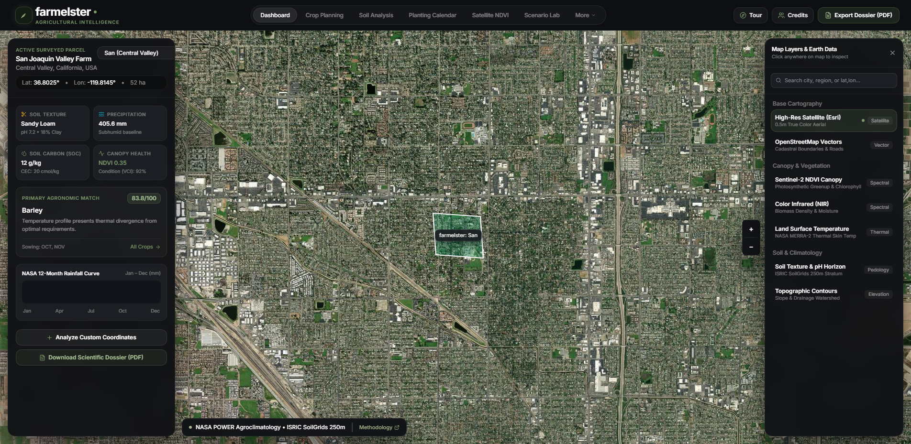
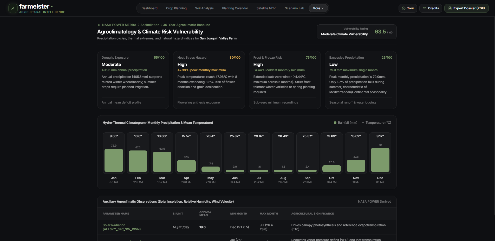
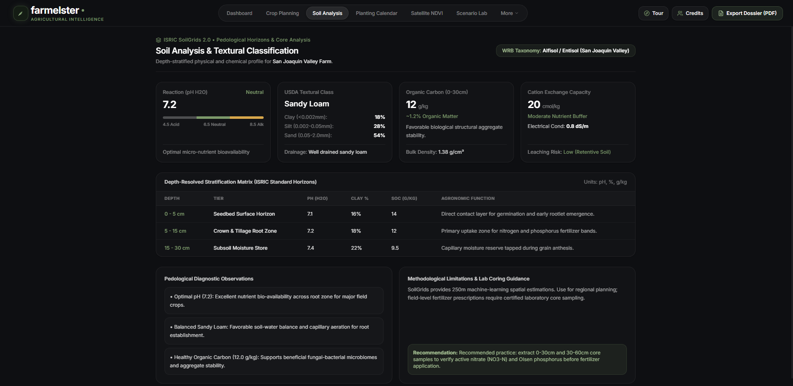
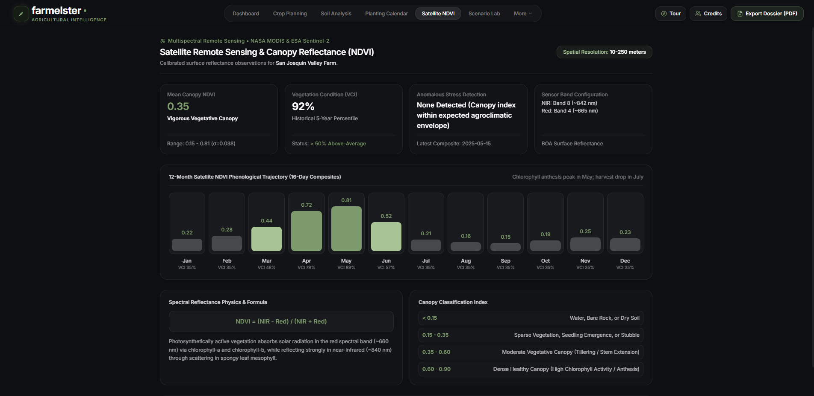
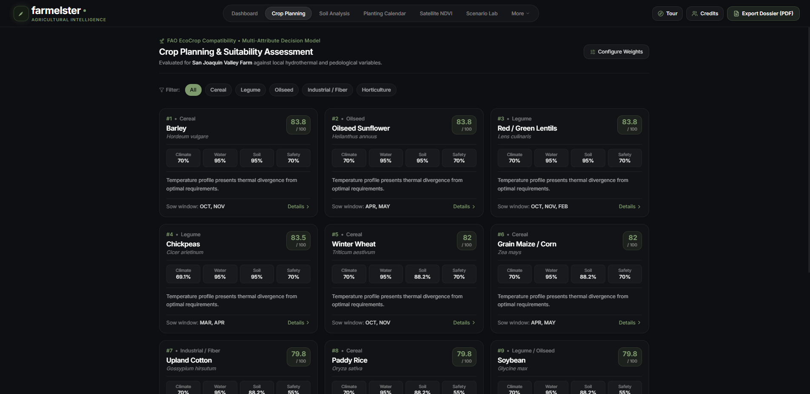
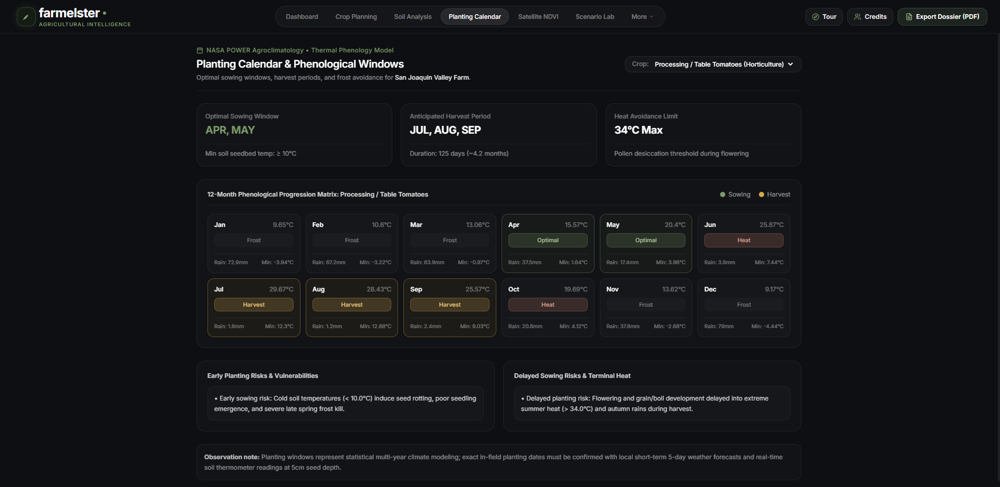
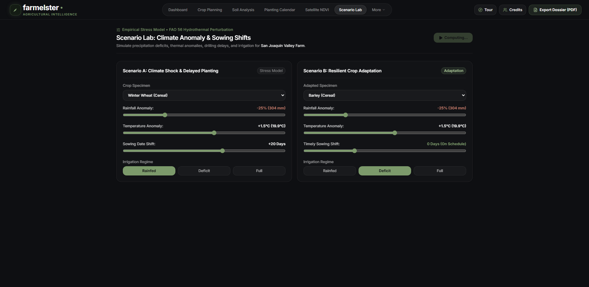
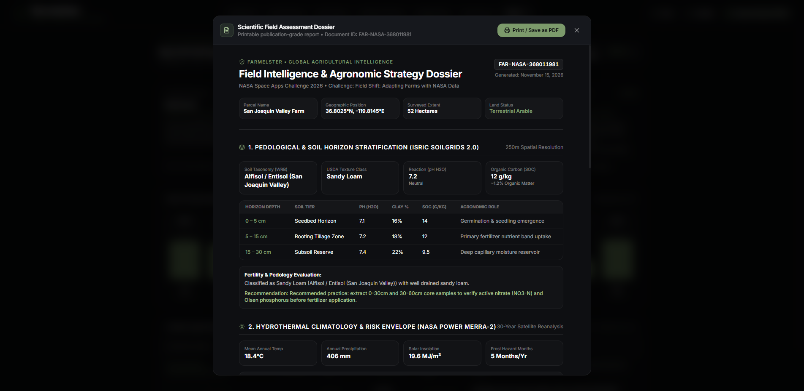

Global GIS & Interactive Field Digital Twin
Pick preset agricultural regions across Turkey and Europe or click anywhere on Earth to generate an instant agronomic digital twin with automatic land vs. marine water detection.
Select from benchmark agricultural parcels (Konya, Thrace, Harran, Çukurova, Bordeaux) or click any point on the globe for custom polygon telemetry.
Uses Natural Earth 10m shapefiles with Shapely STRtree indexing to prevent terrestrial crop recommendations on ocean coordinates, with an 800m coastal buffer.
Coordinate selection triggers concurrent real-time queries across NASA POWER MERRA-2, ISRIC SoilGrids 250m, and Sentinel-2 optical bands.

NASA POWER 30-Year Climatology & Risk Matrix
Replaces obsolete generational habits with 30 years of daily NASA MERRA-2 assimilation, graphing 12-month temperature, precipitation, and extreme risk thresholds.
Pulls daily 2m temperatures (T2M, T2M_MIN, T2M_MAX), precipitation (PRECTOTCORR), solar insolation (ALLSKY_SW_DWN), and relative humidity.
Calculates probability distributions for heatwaves (>35°C), prolonged drought anomalies, spring frost strikes, and excess moisture events.
Quantifies atmospheric moisture thirst to alert growers before stomatal closure and vegetative stress occur.

ISRIC SoilGrids 250m Deep Subsurface Profiling
Probes physical, geochemical, and textural properties down to 200cm depth horizons to evaluate soil water-holding capacity, nutrient exchange, and salinity risks.
Measures soil acidity/alkalinity and cation exchange capacity (CEC) to verify whether specific crops can absorb phosphorus, nitrogen, and micronutrients.
Calculates precise clay, sand, and silt percentages across 6 standard depth horizons (0-5cm, 5-15cm, 15-30cm, 30-60cm, 60-100cm, 100-200cm).
Flags compaction layers and soil organic carbon (SOC) levels to determine root penetration limits and moisture retention.

Sentinel-2 & MODIS Optical Vegetation Index
Tracks photosynthetic vigor and vegetative moisture stress using genuine optical surface reflectance from Copernicus Sentinel-2 multispectral instruments.
Distinguishes dense, highly active chlorophyll canopies (NDVI > 0.65) from sparse scrubland, bare dry soil, or non-photosynthetic open water (NDVI < 0).
Monitors shortwave infrared anomalies to detect early-stage crop moisture stress up to two weeks before visual leaf wilting.
Provides historical satellite acquisition dates and vegetation trend curves for accurate seasonal benchmarking.

Scientific Crop Suitability Engine (MAUT)
Applies Multi-Attribute Utility Theory grounded in peer-reviewed FAO EcoCrop biological thresholds across 11 key food crops to prevent hallucinated crop rankings.
Wheat, Barley, Maize, Sunflower, Chickpea, Cotton, Soybeans, Olive, Grape, Lentil, and Potato evaluated against local thermal limits and soil salinity.
Scores genuinely shift across regions: Arid Harran favors Cotton & Chickpea, Semi-Arid Konya favors Wheat & Barley, Coastal Thrace favors Sunflower.
Growers can calibrate weights (Temperature 0.30, Water 0.30, Soil 0.25, Risk 0.15) to match their farm's specific irrigation access and financial tolerance.

Thermal Planting Calendar & Growing Degree Days
Agriculture depends on accumulated thermal heat units, not calendar months. Farmelster models Growing Degree Days (GDD) alongside 30-year NASA frost probability curves.
Accumulates thermal units above the crop's biological base temperature to ensure physiological grain-fill and ripening before winter chills.
Pinpoints the last expected spring freeze and first autumn frost date using 30-year MERRA-2 daily minimums with 90% statistical safety.
Dynamic month-by-month progress bars for Sowing, Vegetative Expansion, Flowering (Critical Pollination Window), and Harvest.

What-If Climate Simulator & Printable Field Dossier
Empowering agronomists to stress-test their acreage against future IPCC climate anomalies and export publication-ready agronomic dossiers in one click.
Interactive sliders for precipitation anomalies, temperature spikes, sowing date shifts, and irrigation regimes with instant suitability recalculations.
Alternates deep-taproot legumes with shallow-root grains to fix biological nitrogen and break soil-borne pathogen cycles.
Exports a comprehensive report bundling 12-month NASA climate waveforms, ISRIC soil horizons, and crop advisories for bank loans and extension agents.

Built by Students, Designed for the Planet
Farmelster is live in production today on Vercel Serverless with open-access geospatial boundaries, full marine/land classification, and zero proprietary lock-in.
Led project architecture, Python FastAPI backend, and scientific scoring algorithms.
Architected the React 19 interface, responsive workstation layout, and interactive UX.
Researched NASA POWER climatology parameters, NDVI formulas, and crop profiles.
Configured global map coordinate indexing, QA testing, and boundary verification.
